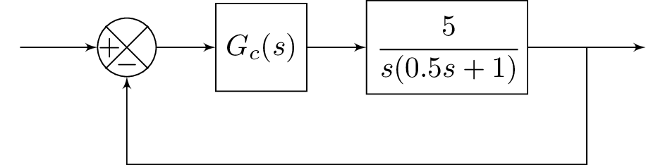

\documentclass{standalone}
\usepackage{amsmath} % For math
\usepackage{amssymb} % For more math
\usepackage{blox}
\usepackage{tikz}
\begin{document}
\begin{tikzpicture}
\bXInput{A}
\bXComp{B}{A}
%\bXLink[$R(s)$]{A}{B}
\bXLink{A}{B}
\bXBloc[2]{C}{$G_c(s)$}{B}
%\bXLink[$V_1$]{B}{C}
\bXLink{B}{C}
\bXBloc[2]{D}{$\cfrac{5}{s(0.5s+1)}$}{C}
\bXLink{C}{D}
\bXOutput[4]{E}{D}
%\bXLink[$C(s)$]{D}{E}
\bXLink{D}{E}
\bXReturn{D-E}{B}{}
%\node (Gc) at (3.25,-0.95) {$G_c(s)$};
%\node (Gs) at (5.375,-0.95) {$G(s)$};
\end{tikzpicture}
\end{document}Created by David Li